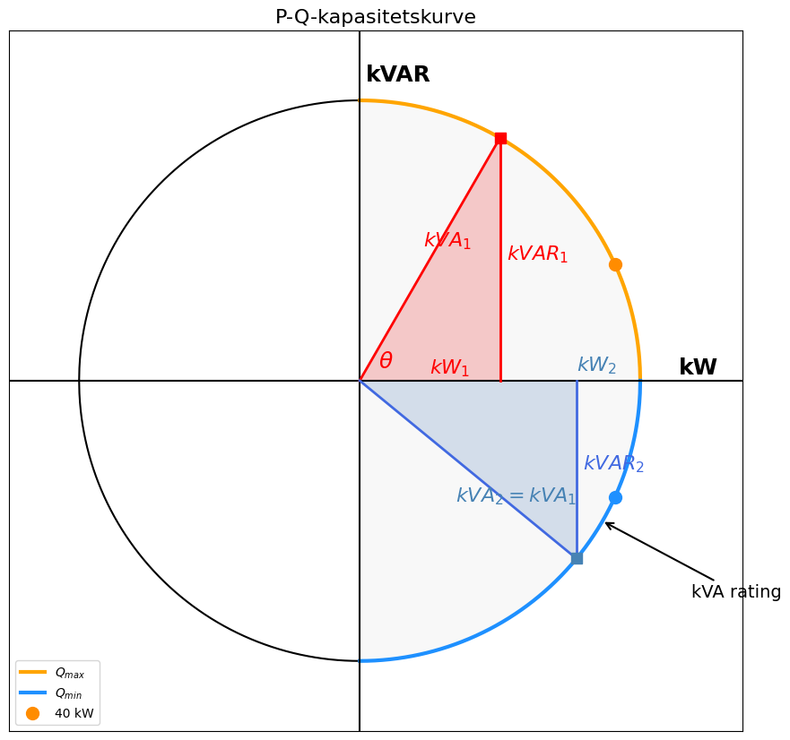

Soldata#
Med økt andel omformerbaserte ressurser (IBR-er), og flere tilfeller av systemkollaps (South Australia Blackout, Odessa Disturbance, Western Interconnection Disturbances, Iberia Blackout) stiller nye krav til spenningsregulering og systemstabilitet. For å bli beslutningsdyktige på integrering av fornybar energi i distribusjonsnettet observerer og analyseres data i forskningsanlegg. Et slikt er USN’s solcelleanlegg multivariate data monitoreres, se Fig. 28. Det ble satt opp våren 2024 og har samlet data siden august 2024. Data er tilgjengelig fra USN Porsgrunn Smart Grid LAB på github.

Fig. 28 Nord-/Øst-vendte referansepanel (Longi) ved solcelleanlegget ved USN Porsgrunn.#
Innstallert effekt#
Solcelleanlegets 54 paneler leverer samlet effekt på 23,76 kWp. Informasjon fra produsentens datablad er gitt i tab-paneler. Tester gjort av panelprodusenten under standardforhold (Standard Test Conditions - STC), der Effekten, \(P\), er en funksjon av normert innstråling, \(G\), temperatur, \(T_c\) og luftmasse \(AM\).
| Paneltype | Antall | Effekt per modul (Wp) | Sum (kWp) | |
|---|---|---|---|---|
| 0 | Longi LR5-66HPH-505 | 44 | 505 | 22.22 |
| 1 | JA Solar JAM72S20-455/MR | 4 | 455 | 1.82 |
| 2 | REC 420AA Pure-R | 2 | 420 | 0.84 |
| 3 | Longi Onyx LR4-60HTB-380M | 2 | 380 | 0.76 |
| 4 | Sunova SS-BG545-72MDH | 2 | 545 | 1.09 |
Inverterkapasitet#
Inverterkapasiteten, i tab-inverter, gir blant annet informasjon om hvor mye spenningsregulering som inverteren er kapabel til å levere, Fig. 29.
{kind=link}

Fig. 29 Kapabilitetskurve inverter#
Paneltester#
Forskjellige måter å teste pv-panel på inkluderer laboratorietest STC (Standard Test Conditions) som brukes for å angi solcellemodulens merkeeffekt (Wp). Dette representerer nær optimale forhold. PTC (PVUSA Test Conditions) representerer mer realistiske driftsforhold med 20 °C lufttemperatur og 1 m/s vind. Effekten målt under PTC er derfor vanligvis lavere enn STC-effekten. NOCT (Nominal Operating Cell Temperature) beskriver forventet celletemperatur under normale utendørs driftsforhold. Denne verdien brukes ofte i modeller for å estimere celletemperatur og temperaturtap, se Fig. 30.
Når solinnstråling absorberes av solcellene, omdannes bare en del av energien til elektrisitet. Resten blir til varme, noe som øker celletemperaturen. En høyere celletemperatur vil normalt redusere modulens effekt og virkningsgrad.
import pandas as pd
from myst_nb import glue
df_standards = pd.DataFrame({
"Parameter": [
"Innstråling",
"Lufttemperatur",
"Celletemperatur",
"Vindhastighet",
"Luftmasse",
"Formål",
"Realisme"
],
"STC": [
"1000 W/m²",
"Typisk 0–2 °C",
"25 °C",
"-",
"AM 1.5",
"Bestemme merkeeffekt (Wp)",
"Ideelle forhold"
],
"PTC": [
"1000 W/m²",
"20 °C",
"-",
"1 m/s",
"AM 1.5",
"Ytelse under realistiske forhold",
"Mer realistisk"
],
"NOCT": [
"800 W/m²",
"20 °C",
"45 °C ± 3 °C",
"1 m/s",
"AM 1.5",
"Estimere celletemperatur",
"Typiske driftsforhold"
]
})
glue("pv_conditions", df_standards, display=False)
| Parameter | STC | PTC | NOCT | |
|---|---|---|---|---|
| 0 | Innstråling | 1000 W/m² | 1000 W/m² | 800 W/m² |
| 1 | Lufttemperatur | Typisk 0–2 °C | 20 °C | 20 °C |
| 2 | Celletemperatur | 25 °C | - | 45 °C ± 3 °C |
| 3 | Vindhastighet | - | 1 m/s | 1 m/s |
| 4 | Luftmasse | AM 1.5 | AM 1.5 | AM 1.5 |
| 5 | Formål | Bestemme merkeeffekt (Wp) | Ytelse under realistiske forhold | Estimere celletemperatur |
| 6 | Realisme | Ideelle forhold | Mer realistisk | Typiske driftsforhold |
Fig. 30 Sammenligning av STC, PTC og NOCT for solcellemoduler.#
Datablad#
Databladene gir viktig informasjon som gir cellen dens elektriske karakteristikk, basert på testene. I fig-datablad vises et utsnitt fra databladet til referansepanelet LR5-66HPH-505M. Dette databladet dekker familien av Longi 66 HPH 495-515.
-------------------------------------------------------
FileNotFoundError Traceback (most recent call last)
Cell In[7], line 5
2 import matplotlib.pyplot as plt
3 from myst_nb import glue
----> 5 img = plt.imread("images/datablad.png")
7 fig, ax = plt.subplots(figsize=(12, 8))
8 ax.imshow(img)
File ~\AppData\Local\Programs\Python\Python310\lib\site-packages\matplotlib\pyplot.py:2614, in imread(fname, format)
2610 @_copy_docstring_and_deprecators(matplotlib.image.imread)
2611 def imread(
2612 fname: str | pathlib.Path | BinaryIO, format: str | None = None
2613 ) -> np.ndarray:
-> 2614 return matplotlib.image.imread(fname, format)
File ~\AppData\Local\Programs\Python\Python310\lib\site-packages\matplotlib\image.py:1520, in imread(fname, format)
1513 if isinstance(fname, str) and len(parse.urlparse(fname).scheme) > 1:
1514 # Pillow doesn't handle URLs directly.
1515 raise ValueError(
1516 "Please open the URL for reading and pass the "
1517 "result to Pillow, e.g. with "
1518 "``np.array(PIL.Image.open(urllib.request.urlopen(url)))``."
1519 )
-> 1520 with img_open(fname) as image:
1521 return (_pil_png_to_float_array(image)
1522 if isinstance(image, PIL.PngImagePlugin.PngImageFile) else
1523 pil_to_array(image))
File ~\AppData\Local\Programs\Python\Python310\lib\site-packages\PIL\ImageFile.py:138, in ImageFile.__init__(self, fp, filename)
135 self._fp: IO[bytes] | DeferredError
136 if is_path(fp):
137 # filename
--> 138 self.fp = open(fp, "rb")
139 self.filename = os.fspath(fp)
140 self._exclusive_fp = True
FileNotFoundError: [Errno 2] No such file or directory: 'images/datablad.png'
Effektivitet \(\eta\)#
Modulens virkningsgrad er også oppgit i databladet for Longi-66HPH-505M er modul effektiviteten oppgitt til å være 21.3 % (Modul Efficiency).
Virkningsgraden til en solcelle bestemmer hvor stor andel av den innfallende solenergien som omdannes til nyttbar elektrisk energi. Virkningsgraden \(\eta\) kan beregnes fra den maksimale effekten \(P_m\) som følger:
der:
(\eta) = virkningsgrad [%]
(P_m) = maksimal elektrisk effekt [W]
(G) = solinnstråling [W/m²]
(A) = solcelleareal [m²]
Den maksimale effekten kan uttrykkes som produktet av spenning og strøm ved maksimal effektpunkt (Maximum Power Point, MPP):
Virkningsgraden kan derfor skrives som:
Alternativt kan virkningsgraden uttrykkes ved hjelp av tomgangsspenningen \(U_{oc}\), kortslutningsstrømmen \(I_{sc}\) og fyllfaktoren \(FF\):
hvor:
\(U_{MPP}\) = spenning ved maksimal effektpunkt [V]
\(I_{MPP}\) = strøm ved maksimal effektpunkt [A]
\(U_{oc}\) = tomgangsspenning [V]
\(I_{sc}\) = kortslutningsstrøm [A]
\(FF\) = fyllfaktor (Fill Factor)
[KC23]
Enkel Modell#
Den enkleste solcellemodellen skalerer effekten lineært med innstrålingen. Mer avanserte modeller korrigerer i tillegg for celletemperatur og solgeometri. Temperatur påvirker virkningsgraden, mens solgeometrien bestemmer hvor stor del av solinnstrålingen som faktisk treffer panelplanet. Dermed oppnås en mer realistisk beregning av solkraftproduksjonen gjennom året.
Den enkleste solcellemodellen antar at den produserte effekten er proporsjonal med innstrålingen. Dette gir en lineær sammenheng mellom innstråling og effekt:
der \(P_{Wp}\) er modulens nominelle effekt ved standard testbetingelser (STC):
Utvidet modell#
Mer avanserte modeller korrigerer i tillegg for celletemperatur og solgeometri. Temperatur påvirker panelvirkningsgraden, mens solgeometrien bestemmer hvor stor del av solinnstrålingen som faktisk treffer panelplanet. Dermed oppnås en mer realistisk beregning av solkraftproduksjonen gjennom året.
Den enkle modellen kan utvides ved å ta hensyn til celletemperaturen:
der \(\gamma\) er temperaturkoeffisienten til solcellemodulen, typisk negativ for silisiumbaserte solceller.
Modellen beskriver hvordan effekten påvirkes både av innstrålingen og av celletemperaturen. Økt innstråling gir høyere effekt, mens høyere celletemperatur vanligvis reduserer virkningsgraden og dermed effekten.
Modellen er fortsatt lineær med hensyn til innstrålingen \(G\), men inkluderer nå en temperaturkorreksjon som gjør den mer realistisk enn den enkle STC-modellen.
Geografisk informasjonssystem for solenergi#
Det finnes geografisk informasjonssystem for solenergi som PVVGIS (Photovoltaic Geographical Information System). PVGIS benytter solgeometri, satellittbaserte strålingsdata og meteorologiske datasett til å estimere lokal solinnstråling. Metoden kan sammenlignes med romlig interpolasjon mellom observasjonspunkter, men inkluderer i tillegg fysiske modeller for solens bane og atmosfærisk påvirkning. PVGIS benyttes til å generere tidsserier for innstråling og temperatur basert på anleggets geografiske lokasjon. Disse dataene brukes videre til å estimere effekt- og energiproduksjonen fra solcelleanlegget.
Importere bibliotek
import requests
import pandas as pd
Informasjon om ytelse og panelhelning hentes fra datablader, se fig-van-der-valk.
PVGIS sitt seriescalc-API, versjon 5.3, henter tidsserier for solinnstråling og meteorologiske data for anleggets lokasjon. Anlegget ble modellert med en installert effekt på 26,73 kWp (peakpower), et antatt systemtap på 14 % (loss), panelhelning på 15\(^{\circ}\) (angle), se numref og sørvendt orientering (aspect=0). Selv om anlegget består av flere orienteringer, benytter vi her en forenklet representasjon for å generere en samlet produksjonsprofil. Gjør en request på data som returneres som .json. Lager datatabell som df.
lat = 59.137337
lon = 9.671440
url = (
f"https://re.jrc.ec.europa.eu/api/v5_3/seriescalc"
f"?lat={lat}"
f"&lon={lon}"
f"&peakpower=26.73"
f"&loss=14"
f"&angle=12"
f"&aspect=0"
f"&outputformat=json"
)
data = requests.get(url).json()
df = pd.DataFrame(data["outputs"]["hourly"])
print(df.columns)
print(df.head())
df["time"] = (
pd.to_datetime(df["time"], format="%Y%m%d:%H%M")
.dt.round("h")
)
df = df.set_index("time")
print(df.head())
## import pandas as pd
P_wp = 26.73 # kWp
gamma = -0.004 # 1/°C
NOCT = 45 # °C
df["Tc"] = (
df["T2m"]
+ ((NOCT - 20) / 800) * df["G(i)"]
)
df["p_kw"] = (
P_wp
* (df["G(i)"] / 1000)
* (1 + gamma * (df["Tc"] - 25))
)
df["p_kw"] = df["p_kw"].clip(lower=0)
pv_profile = df[["p_kw"]]
print(pv_profile)
df['G(i)'].loc['2005-07-15']
Pandapower#
Nettmodell#
Data:
Spenning: 400 V trefase
Kabel 1: 100 m
Kabel 2: 100 m
r = 0.642 Ω/km
x = 0.083 Ω/km
PV-produksjon = 0 kW
Kompleks effekt i lastene#
Last ved b1#
Last ved b2#
Total kompleks effekt#
Tilsynelatende effekt#
Effektfaktor#
Strøm fra nettet#
For et trefasesystem:
Dermed:
Kabelimpedanser#
Fra Pandapower-modellen:
length_km = 0.1
r_ohm_per_km = 0.642
x_ohm_per_km = 0.083
For hver kabel:
Strøm i kabel 2#
Kabel 2 forsyner kun last ved b2.
Spenningsfall i kabel 2#
Forenklet beregning:
Strøm i kabel 1#
Kabel 1 forsyner begge laster.
Spenningsfall i kabel 1#
Spenning på bus b1#
Slack-buss:
Dermed:
Spenning på bus b2#
Per-unit spenninger#
Bus b0#
Bus b1#
Bus b2#
from IPython.display import SVG, display
svg = """
<svg width="900" height="260"
xmlns="http://www.w3.org/2000/svg">
<defs>
<marker id="arrow"
markerWidth="10"
markerHeight="10"
refX="9"
refY="3"
orient="auto">
<path d="M0,0 L10,3 L0,6 z"
fill="black"/>
</marker>
</defs>
<!-- Busser -->
<line x1="60" y1="70"
x2="60" y2="130"
stroke="gray"
stroke-width="8"/>
<line x1="380" y1="70"
x2="380" y2="130"
stroke="gray"
stroke-width="8"/>
<line x1="700" y1="70"
x2="700" y2="130"
stroke="gray"
stroke-width="8"/>
<!-- Linjer -->
<line x1="60" y1="100"
x2="380" y2="100"
stroke="black"
stroke-width="3"/>
<line x1="380" y1="100"
x2="700" y2="100"
stroke="black"
stroke-width="3"/>
<!-- Effektflyt -->
<line x1="160" y1="85"
x2="290" y2="85"
stroke="black"
stroke-width="3"
marker-end="url(#arrow)" />
<text x="175" y="65"
font-size="20">
65 kW
</text>
<line x1="500" y1="85"
x2="610" y2="85"
stroke="black"
stroke-width="3"
marker-end="url(#arrow)" />
<text x="515" y="65"
font-size="20">
15 kW
</text>
<!-- Grid -->
<text x="25" y="45"
font-size="22">
Grid
</text>
<!-- Bus-navn -->
<text x="340" y="45"
font-size="22">
Bus 1
</text>
<text x="660" y="45"
font-size="22">
Bus 2
</text>
<!-- Last 1 -->
<line x1="380" y1="100"
x2="380" y2="150"
stroke="black"
stroke-width="2"/>
<line x1="380" y1="150"
x2="460" y2="150"
stroke="black"
stroke-width="2"
marker-end="url(#arrow)"/>
<text x="470" y="157"
font-size="20">
Load1 = 50 kW
</text>
<!-- Last 2 -->
<line x1="700" y1="100"
x2="700" y2="190"
stroke="black"
stroke-width="2"/>
<line x1="700" y1="190"
x2="760" y2="190"
stroke="black"
stroke-width="2"
marker-end="url(#arrow)"/>
<text x="760" y="197"
font-size="20">
Load2 = 15 kW
</text>
<!-- Spenninger -->
<text x="5" y="190"
font-size="20">
V₀ = 1.000 pu
</text>
<text x="320" y="190"
font-size="20">
V₁ = 0.985 pu
</text>
<text x="640" y="230"
font-size="20">
V₂ = 0.981 pu
</text>
</svg>
"""
display(SVG(svg))
from IPython.display import SVG, display
svg = """
<svg width="900" height="260"
xmlns="http://www.w3.org/2000/svg">
<defs>
<marker id="arrow"
markerWidth="10"
markerHeight="10"
refX="9"
refY="3"
orient="auto">
<path d="M0,0 L10,3 L0,6 z"
fill="black"/>
</marker>
</defs>
<!-- Busser -->
<line x1="60" y1="70"
x2="60" y2="130"
stroke="gray"
stroke-width="8"/>
<line x1="380" y1="70"
x2="380" y2="130"
stroke="gray"
stroke-width="8"/>
<line x1="700" y1="70"
x2="700" y2="130"
stroke="gray"
stroke-width="8"/>
<!-- Linjer -->
<line x1="60" y1="100"
x2="380" y2="100"
stroke="black"
stroke-width="3"/>
<line x1="380" y1="100"
x2="700" y2="100"
stroke="black"
stroke-width="3"/>
<!-- Effektflyt -->
<line x1="160" y1="85"
x2="290" y2="85"
stroke="black"
stroke-width="3"
marker-end="url(#arrow)" />
<text x="175" y="65"
font-size="20">
65 kW
</text>
<line x1="500" y1="85"
x2="610" y2="85"
stroke="black"
stroke-width="3"
marker-end="url(#arrow)" />
<text x="515" y="65"
font-size="20">
15 kW
</text>
<!-- Grid -->
<text x="25" y="45"
font-size="22">
Grid
</text>
<!-- Bus-navn -->
<text x="340" y="45"
font-size="22">
Bus 1
</text>
<text x="660" y="45"
font-size="22">
Bus 2
</text>
<!-- Last 1 -->
<line x1="380" y1="100"
x2="380" y2="150"
stroke="black"
stroke-width="2"/>
<line x1="380" y1="150"
x2="460" y2="150"
stroke="black"
stroke-width="2"
marker-end="url(#arrow)"/>
<text x="470" y="157"
font-size="20">
Load1 = 50 kW
</text>
<!-- Last 2 -->
<line x1="700" y1="100"
x2="700" y2="190"
stroke="black"
stroke-width="2"/>
<line x1="700" y1="190"
x2="760" y2="190"
stroke="black"
stroke-width="2"
marker-end="url(#arrow)"/>
<text x="760" y="197"
font-size="20">
Load2 = 15 kW
</text>
<!-- Spenninger -->
<text x="5" y="190"
font-size="20">
V₀ = 1.000 pu
</text>
<text x="320" y="190"
font-size="20">
V₁ = 0.985 pu
</text>
<text x="640" y="230"
font-size="20">
V₂ = 0.981 pu
</text>
</svg>
"""
display(SVG(svg))
from IPython.display import SVG, display
svg = """
<svg width="1000" height="450"
xmlns="http://www.w3.org/2000/svg">
<defs>
<marker id="arrow"
markerWidth="10"
markerHeight="10"
refX="9"
refY="3"
orient="auto">
<path d="M0,0 L10,3 L0,6 z" fill="black"/>
</marker>
</defs>
<!-- Tittel -->
<text x="300" y="40"
font-size="28"
font-weight="bold">
Pandapower-komponenter
</text>
<!-- create_empty_network -->
<rect x="25"
y="50"
width="320"
height="60"
fill="white"
stroke="black"
stroke-width="2"/>
<text x="35"
y="70"
font-family="monospace"
font-size="18">
net = pp.create_empty_network()
</text>
<text x="35"
y="100"
font-size="16">
Oppretter tom nettmodell
</text>
<!-- Nettdiagram -->
<!-- Busser -->
<line x1="150" y1="180" x2="150" y2="250"
stroke="gray" stroke-width="8"/>
<line x1="450" y1="180" x2="450" y2="250"
stroke="gray" stroke-width="8"/>
<line x1="750" y1="180" x2="750" y2="250"
stroke="gray" stroke-width="8"/>
<!-- Linjer -->
<line x1="150" y1="215" x2="450" y2="215"
stroke="black" stroke-width="3"/>
<line x1="450" y1="215" x2="750" y2="215"
stroke="black" stroke-width="3"/>
<!-- Effektpiler -->
<line x1="250" y1="195"
x2="350" y2="195"
stroke="black"
stroke-width="2"
marker-end="url(#arrow)"/>
<line x1="560" y1="195"
x2="660" y2="195"
stroke="black"
stroke-width="2"
marker-end="url(#arrow)"/>
<!-- Grid -->
<text x="110" y="150"
font-size="22">
Grid
</text>
<!-- Bus labels -->
<text x="125" y="280"
font-size="20">
b0
</text>
<text x="425" y="280"
font-size="20">
b1
</text>
<text x="725" y="280"
font-size="20">
b2
</text>
<!-- Last 1 -->
<line x1="450" y1="215"
x2="450" y2="300"
stroke="black"
stroke-width="2"/>
<line x1="450" y1="300"
x2="520" y2="300"
stroke="black"
stroke-width="2"
marker-end="url(#arrow)"/>
<text x="540" y="307"
font-size="18">
Load1 = 50 kW
</text>
<!-- Last 2 -->
<line x1="750" y1="215"
x2="750" y2="350"
stroke="black"
stroke-width="2"/>
<line x1="750" y1="350"
x2="820" y2="350"
stroke="black"
stroke-width="2"
marker-end="url(#arrow)"/>
<text x="840" y="357"
font-size="18">
Load2 = 15 kW
</text>
<!-- PV -->
<line x1="750" y1="215"
x2="750" y2="110"
stroke="black"
stroke-width="2"/>
<line x1="680" y1="110"
x2="750" y2="110"
stroke="black"
stroke-width="2"
marker-end="url(#arrow)"/>
<text x="560" y="117"
font-size="18">
PV = 0 kW
</text>
<!-- Kodebokser -->
<rect x="20" y="330"
width="250"
height="90"
fill="white"
stroke="black"/>
<text x="35" y="365"
font-family="monospace"
font-size="16">
pp.create_ext_grid(net,b0)
</text>
<rect x="300" y="330"
width="250"
height="90"
fill="white"
stroke="black"/>
<text x="315" y="365"
font-family="monospace"
font-size="16">
pp.create_load(...)
</text>
<text x="315" y="390"
font-family="monospace"
font-size="16">
bus=b1
</text>
<rect x="600" y="330"
width="250"
height="90"
fill="white"
stroke="black"/>
<text x="615" y="365"
font-family="monospace"
font-size="16">
pp.create_sgen(...)
</text>
<text x="615" y="390"
font-family="monospace"
font-size="16">
bus=b2
</text>
</svg>
"""
display(SVG(svg))
Hva gjør Pandapower?#
pp.runpp(net)
og sammenligner med:
net.res_bus
net.res_line
net.res_ext_grid
Neste steg: Solkraft#
Når studentene forstår dette eksemplet kan PV-produksjon legges til:
net.sgen.at[pv, 'p_mw'] = 0.04
Da kan vi undersøke:
Hvordan strømmer endres
Hvordan spenninger endres
Redusert nettimport
Revers effektflyt
import pandapower as pp
import pandapower.plotting as plot
import matplotlib.pyplot as plt
# --------------------------------------------------
# Opprett nett
# --------------------------------------------------
net = pp.create_empty_network()
# --------------------------------------------------
# Busser
# --------------------------------------------------
b0 = pp.create_bus(
net,
vn_kv=0.4,
name="Trafo",
geodata=(0, 0)
)
b1 = pp.create_bus(
net,
vn_kv=0.4,
name="Load",
geodata=(1, 0)
)
b2 = pp.create_bus(
net,
vn_kv=0.4,
name="PV",
geodata=(2, 0)
)
# --------------------------------------------------
# Nettstasjon
# --------------------------------------------------
pp.create_ext_grid(net, b0)
# --------------------------------------------------
# Linjer
# --------------------------------------------------
line1 = pp.create_line_from_parameters(
net,
b0, b1,
length_km=0.1,
r_ohm_per_km=0.642,
x_ohm_per_km=0.083,
c_nf_per_km=0,
max_i_ka=0.2
)
line2 = pp.create_line_from_parameters(
net,
b1, b2,
length_km=0.1,
r_ohm_per_km=0.642,
x_ohm_per_km=0.083,
c_nf_per_km=0,
max_i_ka=0.2
)
# --------------------------------------------------
# Last
# --------------------------------------------------
# Last ved Bus1
pp.create_load(
net,
bus=b1,
p_mw=0.050, # 50 kW
q_mvar=0.010,
name="Load1"
)
# Last ved Bus2
pp.create_load(
net,
bus=b2,
p_mw=0.015, # 15 kW
q_mvar=0.003,
name="Load2"
)
# --------------------------------------------------
# PV-anlegg 44 kWp
# --------------------------------------------------
pv = pp.create_sgen(
net,
bus=b2,
p_mw=0.021, #
q_mvar =0.11,
name="PV"
)
# --------------------------------------------------
# Lastflyt
# --------------------------------------------------
pp.runpp(net, numba=False)
# --------------------------------------------------
# Resultater
# --------------------------------------------------
print("\nBus-spenninger")
print(net.res_bus.vm_pu)
print("\nEffekt fra nettet")
print(net.res_ext_grid.p_mw)
print("\nEffektflyt i linjer")
print(net.res_line[["p_from_mw"]])
#print('nett',net.load)
# --------------------------------------------------
# Plott nett
# --------------------------------------------------
#plt.figure(figsize=(8,3))
#plot.simple_plot(
# net,
# bus_size=1,
# line_width=2,
# plot_loads=True,
# plot_sgens=True
#)
#plt.show()